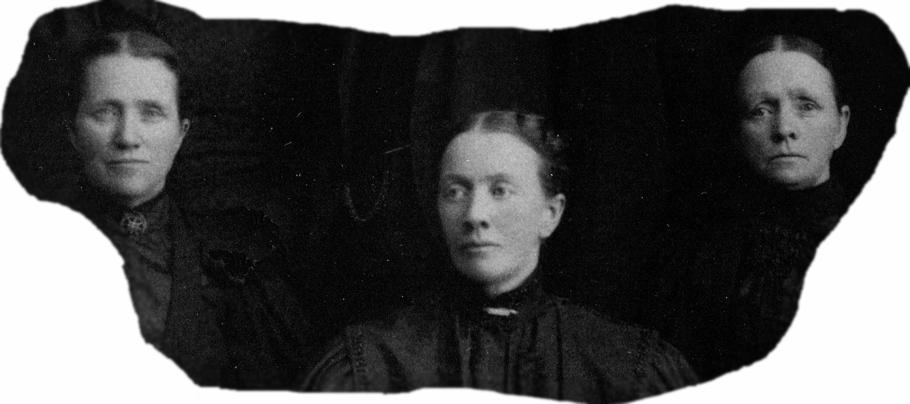

Quotes taken from Rachel Fielding Burton's own self-written autobiography and which reflect the lives of her sisters, Ellen and Sarah Ann (who shared all things)
"I was born in Preston, Lancashire, England on the 27 June 1839. My father's name was Joseph Fielding and my mother's name Hannah Greenwood. I left England and came to Nauvoo with my parents before I can remember, when I was near two years of age.
"In Nauvoo father bought some land (at $8.00 per acre) and planted a garden, and dug a well. He planted some raspberry bushes. When they got big enough to bear fruit Ellen and I were delighted. One morning we got out of bed and stole out the back door and ate our fill of raspberries. We got some juice on our gowns. Our mother reproved us, so we did not do it any more.
"Once after we went to a meeting we went home with Uncle Hyrum Smith's family. The children, our cousins, had a little wagon-and we had a good time with a rocking horse. I fell down stairs, and it left a scar on the back of my head. Uncle Joseph Smith used to enjoy a romp with the children, and played with us many times. The day I was 5 years old the persecutors killed my Uncle Hyrum and his brother Joseph, the Prophet, and I remember well the sorrow and excitement at that time. Quoted from Joseph Fielding's Diary - 'After the martyrdom of the Prophet and Hyrum the building of the Temple was resumed with great vigor. . . . The upper room was finished and in December 1845 it was dedicated and the Twelve began to give the Saints their endowments. . . . On the 23rd of January we were sealed in the Temple and on the 26th our 4 children, Rachel, Ellen, Heber (born in Nauvoo 20 July 1843), and Joseph (born 13th July 1846), were sealed to us.'
"When the mobs were raiding Nauvoo, the men were gone, and my mother and auntie (Mary Ann) were alone with us children, so they-brought the pitchfork, hoe, rake and axe into the house, filled the stove with hot water, and put the cayenne pepper on the table ready to use if it was necessary in defense of our home and family. But our enemies did not come.
"After our enemies drove us out of Nauvoo our parents had many worries and a great deal of hard work. We had two heavy covered wagons - a span of horses on one, and two cows pulled the other. At Winter Quarters we were often hungry. We ate pig-weeds and cornbread, our only food until our vegetable garden grew. At Winter Quarters my two little brothers died-Hyrum Thomas, and Auntie's baby John.
"When we started for Salt Lake we were rather destitute. We lost one of our horses, so father put the oxen on one wagon, with the horse in front of them forming a spike team. Mother and Auntie drove this wagon with the children in it until the lines broke - then I had to lead it by the bridle. It was difficult sometimes. I was bare-footed and the horse stepped on my heels and kept them sore. At Big Mountain the decent was very steep, but I went down without waiting for my parents who were walking behind. The people at the bottom were much alarmed thinking I would be killed, but we arrived at the bottom safely. I would not think of letting go of that bridle because the children were in the wagon. My feet were dreadfully cut and bruised.
"Once while traveling on the plains the ox we had of Aunt Smith's became so sick we feared it would die, but father poured oil on it and administered to it. It soon was alright, so father hitched it up and we went on our way rejoicing.
"We had many enjoyable times on the plains, as well as sad ones. When we camped our wagons were placed in a circle, thus forming a corral for the cattle at night. Some nights we camped early, made immense bonfires, and would gather around the fires and sing or dance and make merry. Often we saw large herds of Buffalo. Once we saw a herd of deer.
"We arrived in Salt Lake Valley, September 23, 1849, and for awhile we lived with Aunt Mercy Rachel Thompson, father's sister, who had come to the valley the year before us, then father obtained a piece of land in South Mill Creek, and we lived in our two wagons, Mother in one, and Auntie in the other. Father went to the canyon-dragged logs home-soon we had walls for a one room house. Someone let us have straw-this was our floor, then father stretched the tent over the top for a roof, and we had a living room-the wagons still being our bedrooms.
"In January Auntie had a little daughter-mother was the doctor, nurse and housekeeper. In May mother also had a little daughter, and Auntie did all for her.
"In the spring father ploughed and planted a garden and some wheat. Before the crops grew father was forced to sell a piece of broadcloth he had brought from England to make a suit for himself, to get food for us to eat. When the wheat ripened father cut it with a scythe and threshed it with a flail, then took it to Neff's mill and had it ground into flour. When he brought it home mother made some hot biscuits and cooked some green peas from our garden. I never shall forget that delicious meal! We had been on rations so long-it seemed I could scarcely get satisfied.
"When the crickets came in 1849, the beautiful gulls came and ate the crickets. When they came they made such a terrible noise, and lit so close to Ellen and I while we were watching the cows that we were dreadfully frightened.
"When the grasshopper war came in 1865 they were harder to get rid of than the crickets, because the gulls did not like the grasshoppers, and everyone old enough to hold a stick had to get out to fight them.
"There were no stores at first-we were entirely on our own resources.
"To take the place of matches, we used a tinder box. We saved every bit of grease, even that collected on the dishpans, and made our soap using the lye made from wood ashes; we scrubbed our floors with sand; ragweed was used for our brooms. Syrup (our only sweet) was made from frozen squash and beets; we braided our hats from straw, made starch from grated potatoes.î
When William Walton Burton came to their home, Rachel and Ellen met and admired him. Later when he asked Rachel to be his wife, she agreed on condition that he would also marry Ellen. William and Rachel were married on 28 March 1856. For some years they struggled in poverty. Everything seemed to go wrong. Rachel dreamed that if he would go and take Ellen for his wife they would do better and God would prosper them. This proved to be true. William Walton Burton married Ellen Fielding on 2 November 1861.
Joseph Fielding had been pleased with the marriage of his two daughters, and in a conversation with William shortly before his death he expressed his approval in case William should also marry Sarah Ann.
After the death of Joseph Fielding and his two sons Heber and Joseph, Sarah Ann and her mother Hannah Fielding, were moved to Ogden to live with William, Rachel and Ellen. Sometime after this both William and Sarah Ann had dreams, which they each related to Hannah Fielding. The significance of the dreams made them feel that it was right to marry. Sarah Ann Fielding became William's third wife, 23 May 1870.
The three sisters shared this close relationship in harmony and love assisting each other in times of stress and hardship, and rejoicing together in many pleasures and joys.
Memories of the old third ward home are given by Rachel Burton Ballantyne. There is no picture available for this home.
Our old home on Grant and 23rd Street in Ogden was a log structure, with a unit for each wife, and one for Grandma Fielding, but the living room was used for the entire family. The happy harmonious relationship of our life together there are sweet memories.
There [was] a clover-carpeted orchard in the back yard, fragrant with bloom in spring, whose branches swayed to the weight of happy children and their acrobatic antics. Here was grown sweet fennel, catnip, dill and hollyhocks of every hue, from which we made our prize dolls. We made them furled skirts and turban hats, trimmed with multi-colored currents [sic], and feathery fennel and dill. There was an old rock cellar beneath the granary [sic], where water rose during the irrigation season-this made a wonderful skating pond in the winter.
In honor of William Walton Burton's eightieth birthday his family published a booklet of some of his many poems. [This was written when he had only two wives.]
Our home, I love it, though humble it be,
All its surroundings are dear to me;
The song of the children-the smile of my wife-
Are pleasure and sunshine to gladden my life.
There dearest ones meet me, and sweetest smiles greet me,
Giving me welcome that fills me with love;
A foretaste of heaven our Father has given
To bind us together and lead us above.
